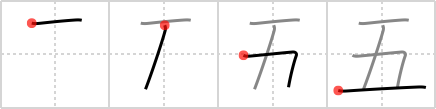

五
← →
five

Reading:
On-Yomi: ゴ — Kun-Yomi: いつ、いつ.つ
Heisig story:
As with four, we shall postpone learning the primitive elements that make up this character. Note how the general principle we just learned in the preceding frame applies to the writing of the character for five.
Koohii stories:
1) [NooNoo] 11-4-2008(236): 三 + two vertical lines = 5.
2) [Branduil] 25-2-2006(36): This Kanji looks like a "3" Kanji with two added vertical lines. 3+2= 5.
3) [gaijingo] 16-6-2006(33): Five - has a THREE, and a small 'h'… 'high five'.
4) [verne710] 10-7-2009(13): The letter 'F' is skiing for the 'five' trophies.
5) [overture2112] 8-11-2010(7): The King (king (#255 王)) leaned on the magical walking stick in his left hand which the wizard said would let him "go" (ゴ) through the fifth dimension.